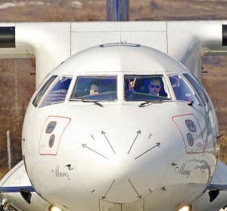
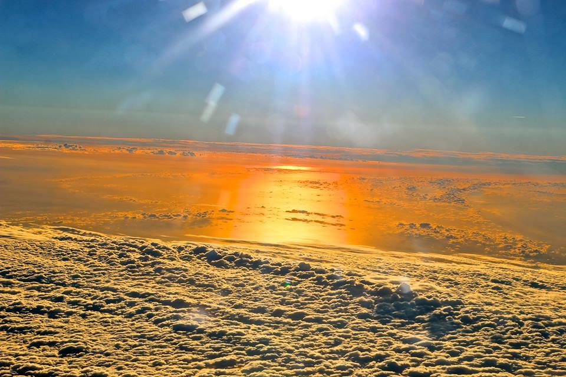
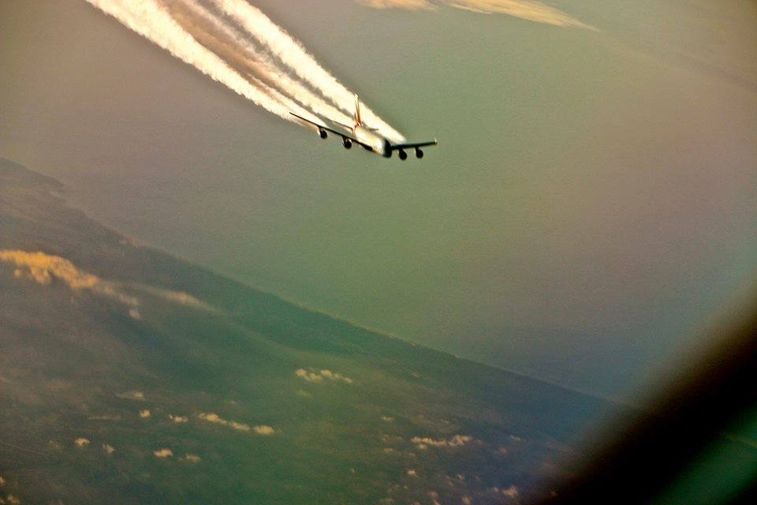
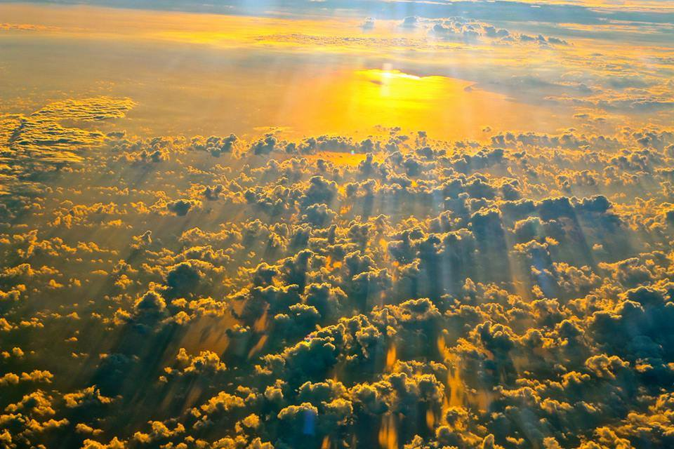
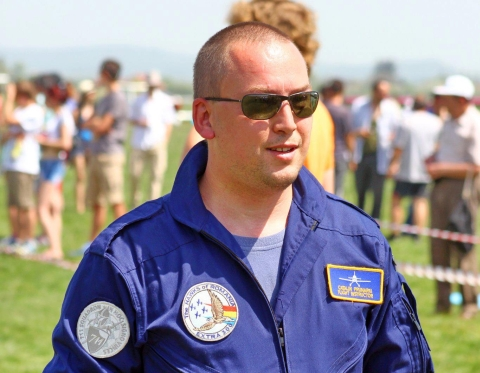
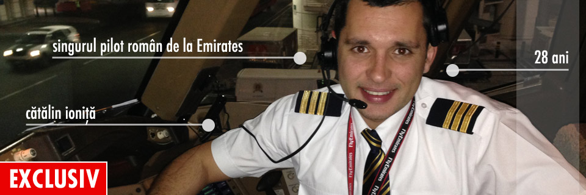
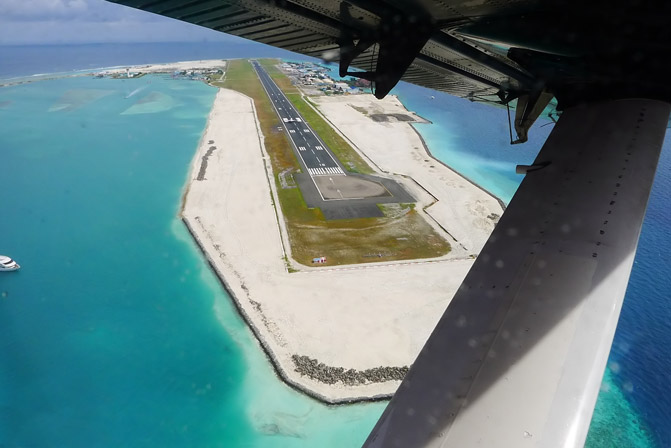
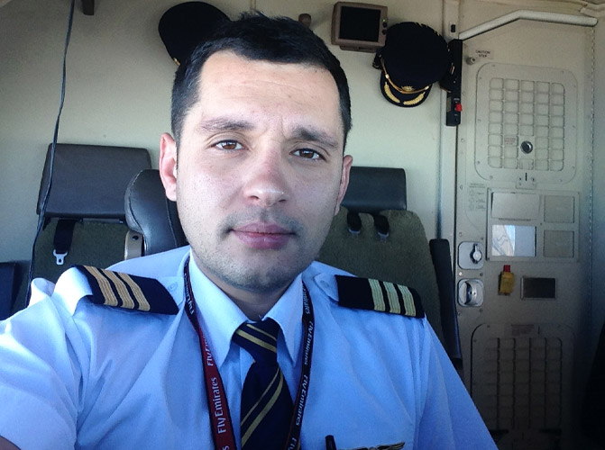
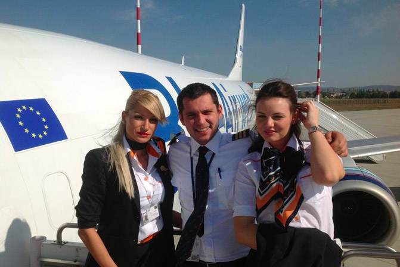
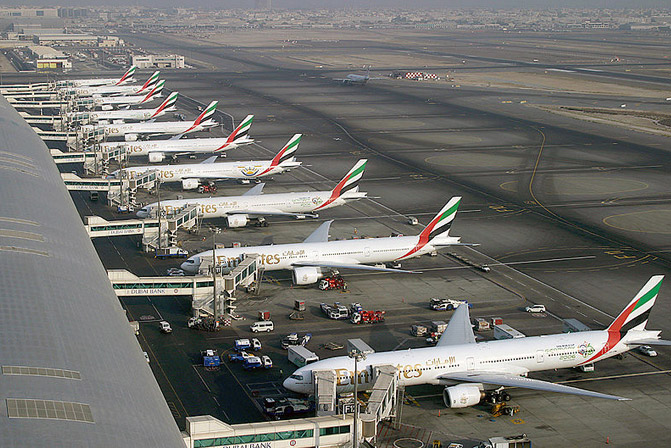

Catalin Prunariu
Catalin Prunariu este un nume cunoscut si recunoscut in lumea aviatiei din Romania. Fiul singurului cosmonaut roman, Catalin s-a indragostit si el, cum altfel, de aviatie. Nu a ajuns in spatiu, insa este un excelent pilot de linie si un foarte bun pilot sportiv.
Mai jos, o scurta expunere a greutatilor pe care le presupune a aceasta meserie, a compromisurilor care trebuie facute, a lehamitei care ii mai prinde urma cateodata chiar si pe aviatori.
Textul lui Catalin Prunariu a fost publicat pe site-ul transilvaniabusiness.ro:
˝Ora 5 dimineaţa. Sunetul strident al ceasului îmi zgârie creierul şi mă obligă sa mă ridic buimac din pat. Un drum rapid la baie, uniforma pe mine, o privire rapidă pe condiţiile meteo previzionate şi în 40 de minute sunt în maşină în drum spre aeroport. Micul dejun poate să mai aştepte, probabil o sa-l iau mai târziu în avion. Mai am o oră şi treizeci de minute şi decolez, iar cu o oră înainte de decolare trebuie să fiu la briefing-ul cu echipajul, căruia trebuie să-i spun că iar o să ne confruntăm cu furtuni pe parcursul celor două curse pe care le avem de făcut împreună, că este posibil ca la a doua cursă să întârziem din cauza vremii, ceea ce înseamnă că probabil vom termina ziua de lucru dupa-amiază în jurul orei 17 şi că este estimat să avem ambele curse pline ceea ce înseamnă că echipajul de cabină va avea serios de alergat toată ziua.
Seara când în sfârşit aterizăm din ultima cursă, ne aşteaptă binecunoscutul ambuteiaj de la intrarea în oraş, ceea ce înseamnă că acasă ajung după încă 90 de minute petrecute în trafic. Este ora şase seara şi în mai putin de 15 ore, începe o nouă zi de muncă pentru mine. După ce intru în casă şi fac un duş, mă prăbuşesc în pat, închid ochii şi încerc să calmez usturimea datorată orelor de privit în monitoarele avionului. Încet, încet organismul se calmează, pulsul mai scade uşor şi simt cum muşchii se relaxează treptat. Însă momentul de linişte nu durează prea mult, căci cei doi copii, proaspăt sosiţi de la grădiniţă, mă iau cu asalt bucuroşi că în sfîrşit m-au găsit săptămâna aceasta acasă.
Este una din cele două zile din săptămână în care fie nu dorm deja când vin ei acasă, sau nu vin eu acasă când dorm ei, sau nu sunt plecat într-o cursă de noapte începută înainte să vină ei acasă şi terminată cu ceva timp după ce ei au plecat la gradiniţă. De undeva din bucătărie, soţia mă informează că trebuie să fac un drum la magazin ca să iau o pâine, nişte unt şi o sticlă de lapte, pentru a putea pune masa de seară. Deşi nu am niciun chef, trebuie să ajung la magazin, altfel risc să rămân cu o singură masă luată de-a lungul zilei, ˝micul dejun˝ servit pe fugă la ora 12, înainte de a începe coborârea de la nivel 220. Până revin de la magazin, până se pregăteşte şi se serveşte masa s-a făcut ora 22. Mănânc pe fugă, nu mă simt foarte confortabil pe scaun, după o zi întreagă petrecută în aceeaşi poziţie, încheieturile şi muşchii protestează discret. Nici nu ştiu cînd s-a facut unsprezece fără un sfert, dar este timpul să mă retrag şi eu în pat. Înainte de aceasta însă, deschid email-ul să văd ce noutăţi mă aşteaptă în căsuţa poştală. Ceva facturi – noroc cu e-banking-ul, un amic care mă ˝înjură˝ prieteneşte că n-am mai ieşit cu el la o bere de 2 luni – nu-i mai răspund, oricum n-ar întelege de ce un om în ziua lui liberă se îngroapă sub plapumă şi un amendament la manualul de companie – trebuie să-l descarc şi să-l citesc, de mâine este în vigoare şi trebuie să aplic ce scrie în el. Când termin de citit este ora 1 noaptea şi sting lumina cu gândul că dimineaţă la 6 un sunet strident îmi va zgâria iar creierul.”
În mare parte cam aşa arată fiecare zi din viaţa unui pilot de linie. Multă muncă, viaţă socială pe sărite, viaţă de familie fragmentată, presiuni, încercări, provocări, nervi, stres, luptă cu timpul, nimic din ceea ce se vede în filme. Imaginea idilică în care pilotul cu eşarfă albă şi zâmbet pe buze este înconjurat de stewardese frumoase care-l însoţesc în cine ştie ce colţ exotic de lume rămâne numai bună ca să hranească imaginaţia celor neştiutori.
În realitate, cei mai mulţi dintre noi văd ţările străine de pe platforma de îmbarcare, unde avionul staţionează maxim 40 de minute, timp suficient să fie debarcaţi pasagerii, să se facă ordine şi curăţenie în aeronavă şi să se îmbarce pasagerii pentru tronsonul de retur. Timpul de lucru este întins la maxim de operatori pentru a folosi cât mai eficient resursa umană şi sunt frecvente situaţiile în care petreci la muncă 10-11 ore din maximul de 13 posibil (în situaţii excepţionale 15 ore). Însoţitorii de bord numai timp de flirt nu au, îşi petrec aproape tot timpul în picioare la dispoziţia pasagerilor, iar între curse abia aşteaptă să se prăbuşească pe un scaun pentru a mai domoli din durerile picioarelor şi înţepeneala încheieturilor. Piloţii militari sau cei sportivi nu au nici ei o viaţă cu mult diferită. Orele de zbor sunt mai puţine, dar organismul este şi mai sever pedepsit. Suprasarcinile îşi spun cuvântul de la vârste relativ timpurii şi sistemul osos îşi cere constant tributul în durere. Presiunea zborului manual de precizie lasă atât urme cărunte în podoaba capilară cât şi în nivelul de stres cu care este bombardat creierul, iar veniturile substanţial mai mici decât ale piloţilor de transport aerian nu contribuie cu nimic la creşterea stării de spirit.
Privită din interior, viaţa personalului navigant nu mai este deloc atât de sclipitoare cum pare din exterior. Şi totuşi ce-i face pe tineri să dorească în continuare să acceadă în această lume, preveniţi fiind de ceea ce-i aşteaptă? De ce vor în continuare să se formeze ca piloţi şi însoţitori de bord? De ce se înscriu în continuare la cursuri de zbor, informaţi fiind că în aceste vremuri de criză, găsirea unui loc de muncă a devenit o adevărată loterie?
Răspunsul nu este deloc simplu, dar îşi are originea în fascinaţia antică pe care omul a avut-o pentru zbor. Una din cele trei profesii, pe care orice copil le enumeră când este întrebat ce vrea să se facă când o să fie mare are legătura cu zborul – fie că vrea pilot, fie că vrea astronaut. Cei mai mulţi intră în contact cu aviaţia de mici, fie ca spectatori la mitinguri aeriene, fie ca pasageri. Fascinaţia continuă şi se dezvoltă, în imaginaţia copiilor, piloţii care răsucesc cu măiestrie avioanele pe cer sau aterizează prin furtuni şi ninsori sunt nişte eroi aflaţi în continuă bătălie cu un balaur nevăzut pe care-l înving mereu. Pe măsură ce creştem şi descoperim contribuţia istorică a naţiei în domeniu şi realizările pionierilor aviaţiei, ne condiţionăm tot mai mult să intrăm în această profesie, atunci când va veni momentul alegerii şi să ducem mai departe gloria naţională. La vârsta primelor iubiri, apariţia diafană a unei stewardese, frumoasă şi plină de graţie în timp ce-şi face serviciul, este exact imboldul necesar care-l motivează pe tânar să facă tot posibilul să ajungă permanent în prezenţa ei.
Adunate unele peste celelalte, tradiţia familiei, experienţele proprii, filmele spectaculoase, cărţile eroice, moştenirea istorică sau dorinţa de a impresiona ne aduc în faţa primului examen cu adevarat dur, duşul rece care prevesteşte ce va urma: examenul medical. Cei care nu-l trec ramân cu nostalgia şi visele, cei care ajung în şcoală încep să descopere încet, încet adevărata faţă a meseriei şi tot ceea ce l-a motivat până atunci începe să capete noi valenţe. Cei care nu se pot adapta, renunţă şi ramân cu nostalgia şi visele, ceilalţi merg mai departe până la absolvire. După absolvire începe sinuosul joc de-a şoarecele şi pisica, în care foştii colegi ajung rivali în bătălia pe câte un loc vacant la un operator aerian. Unii reuşesc din prima, alţii sunt perseverenţi până reuşesc undeva, iar restul se lasă păgubaşi şi ramân cu nostalgia şi visele.
Pentru puţinii care au reuşit în final, combustibilul care i-a ţinut în viaţă şi i-a ajutat se cheamă PASIUNE. Acesta este secretul aviatorilor, aceasta este motivaţia noastră, căci aviaţia este una din ultimele meserii în care PASIUNEA te ajută să răzbeşti, să treci peste toate sacrificiile şi frustrările şi să continui să te trezeşti la ore nefireşti pentru cei din jur şi să priveşti cu optimism următoarele 12 ore de muncă, fie că vei fi răsplătit cu un răsărit sau apus superb, fie că vei lupta cu o furtună de vară sau vei fi cuprins de ceaţă până când roţile vor lua contact cu betonul. Iar mult mai târziu, în cele 15 minute de linişte în care îţi odihneşti ochii şi relaxezi muşchii, un zâmbet discret îţi va lumina faţa, când vei revedea pasagerii bucuroşi că au ajuns la destinaţie sau spectatorii uimiţi în faţa acrobaţiilor aeriene sau soldaţii uşuraţi că le-ai acoperit poziţiile.
Iar mulţumirea celor din jur va alimenta combustibilul tău, numit PASIUNE. Cătălin PRUNARIU
Interviu cu Catalin Ionita, singurul pilot roman de la compania Emirates
Romania are multi piloti de avion, insa unul singur se poate lauda ca lucreaza pentru Emirates – una dintre cele mai titrate companii aeriene ale lumii. Impreuna cu Teodor Stefan (Aeronews.ro) am realizat un interviu in exclusivitate cu Catalin Ionita – Senior First Officer (copilot). La numai 28 de ani, Catalin zboara pe Boeing 777.
Cum ai ajuns la Emirates?
In primul rand trebuie sa va spun ca aviatia este o trasatura de familie. Tatal meu a fost cu viziunea, el fiind si pilot la Jet Airways (India) pe ATR (anterior a fost la TAROM pe Airbus A310). Cat despre fratele meu, el este comandant la Blue Air.
Am terminat liceul si la un an dupa, am dat la Academia de Aviatie. Stii cum e cu matematica si fizica, daca nu dadeam atunci, intr-un an de zile se cam duc. Eu voiam avioane, dar nu mai era promotia, asa ca m-am dus la elicoptere. Mai bine decat nimic, nu? Spre surprinderea mea, faptul ca m-am dus spre elicoptere a fost una dintre cele mai inspirate decizii luate pana acum.
Prima data am zburat pe Eurocopter 120 Bravo si Eurocopter 155. Am mai dat si la Politehnica, in acelasi timp. Am fost acceptat la ambele, am mers asa vreo 3 ani de zile, pana am terminat Academia, dupa care m-am angajat la Blue Air. Asa am facut trecerea de la elicoptere la avioane. Au fost si multe accidente de elicopter in perioada respectiva si am considerat ca este mai bine asa.
Pe ce aeroporturi iti place sa aterizezi?
Fara indoiala, Maldive este pe primul loc in preferintele mele.
 Intr-un top al destinatiilor, pe care le-ai recomanda, care sunt primele trei?Pe primul loc in topul preferintelor mele se afla Bangkok-ul (Thailanda), urmat de Las Vegas si Nisa.
Unde nu prea iti place sa zbori, ca destinatie?Daca stau bine sa ma gandesc, Dakar (Senegal). Nu ma simt deloc confortabil acolo. Tantari, malarie, trebuie sa-ti dai cu tot felul de spray-uri sa te protejezi, etc. Apoi trebuie sa ai grija sa nu mananci ceva ce nu-ti pica bine pentru ca pe zborul de intoarcere nu te vei simti deloc OK.
Si daca tot am ajuns la capitolul culinar, peste tot pe unde ma duc incerc preparatele traditionale, specifice destinatiei respective, alaturi de bauturile tipice zonei. Daca ar trebui sa nominalizez destinatia mea culinara favorita, tot Bangkok-ul ar fi.
 Ai trecere mai mare in fata fetelor pentru ca esti pilot?Imi place sa cred ca fetele ma simpatizeaza ca persoana, nu ca job. Pentru ca, pana la urma, ies cu mine si cu felul meu de a fi, nu cu job-ul pe care-l am. De altfel, sunt unele cazuri in care prietenii ma tachineaza cu profesia mea si nu ma simt deloc confortabil.
Spre exemplu, daca iesim intr-un grup si eu nu le spun fetelor prezente – care nu ma cunosc – cu ce ma ocup, prietenii au imediat grija sa ma ia peste picior (in gluma, evident) si sa-mi spuna “pilotul”.
Pe langa aviatie, ce alte hobby-uri mai ai?Sunt mort dupa sporturile de iarna. Imi plac la nebunie. Sa schiez, sa ma dau cu snowboard-ul, absolut tot ce tine de domeniul asta. Evident, la un moment dat vreau sa-mi iau si un avion mic, fix pe gustul meu, pentru zboruri de agrement.
Ce-ti lipseste cel mai mult in Dubai?
Pe langa familie si prieteni, verdeata! Daca va uitati la o poza cu apartamentul meu din Dubai Marina veti vedea ca verdele predomina. Iar cand vin in Romania, ma delectez cu preparatele culinare specifice pe care mama mi le pregateste cu multa dragoste: sarmale, ciorba de porc, mici, pastrama, etc.
